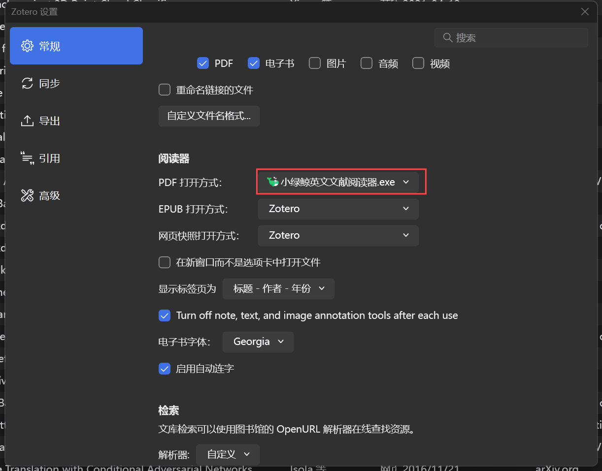
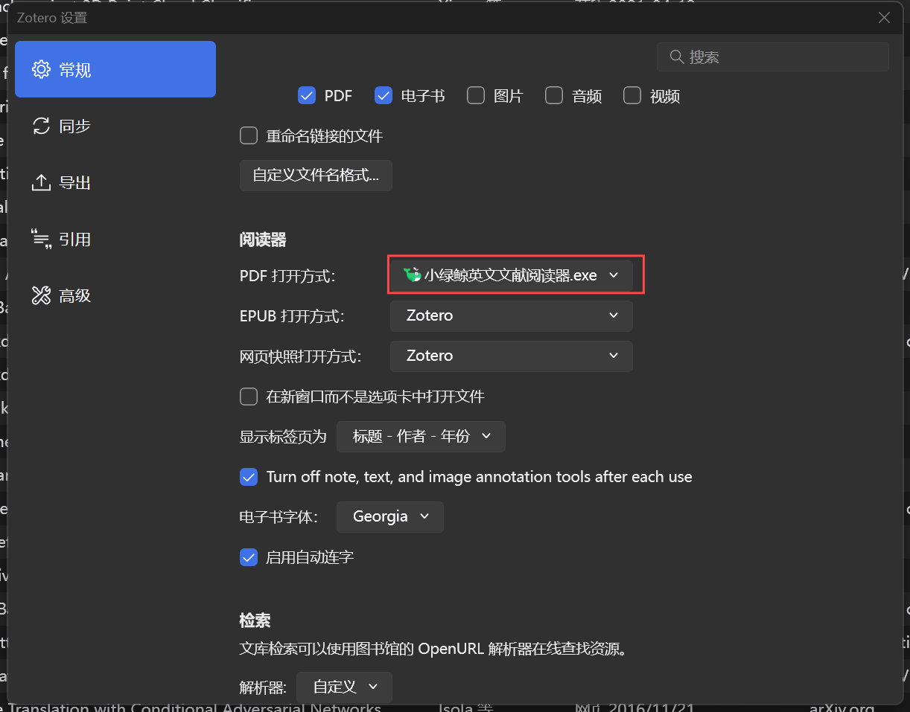

Zotero与小绿鲸的联动
① 打开Zotero，在左上方菜单栏选择“编辑”，之后选择“设置”
② 在“常规”选项卡中，向下滚动鼠标，在“阅读器”一栏中将“PDF打开方式”选择为小绿鲸

③ 之后，在Zotero双击打开的文章将默认使用小绿鲸进行阅读
① 打开Zotero，在左上方菜单栏选择“编辑”，之后选择“设置”
② 在“常规”选项卡中，向下滚动鼠标，在“阅读器”一栏中将“PDF打开方式”选择为小绿鲸

③ 之后，在Zotero双击打开的文章将默认使用小绿鲸进行阅读